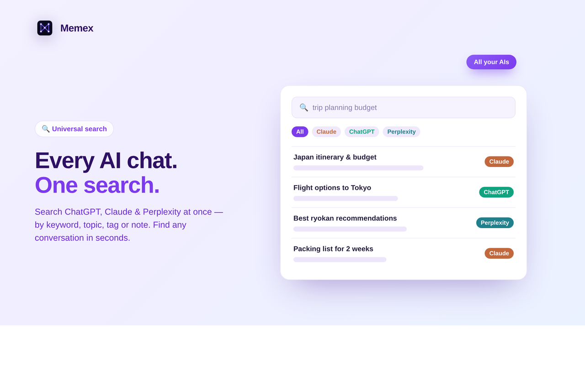
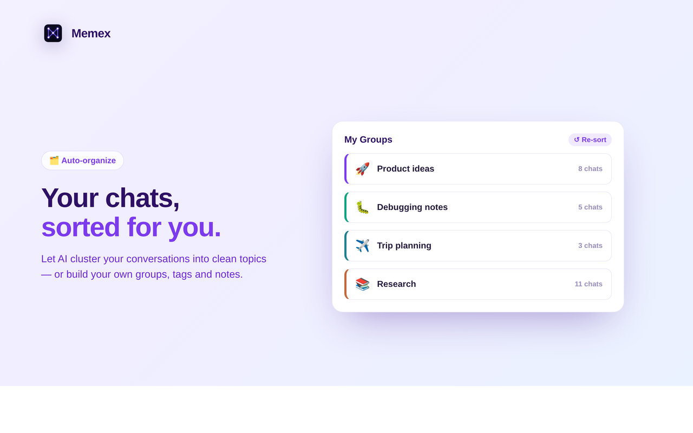
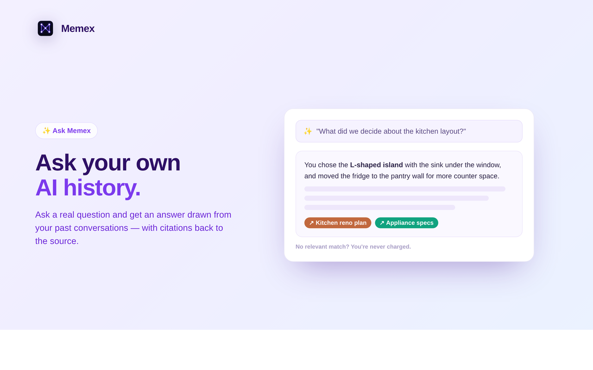
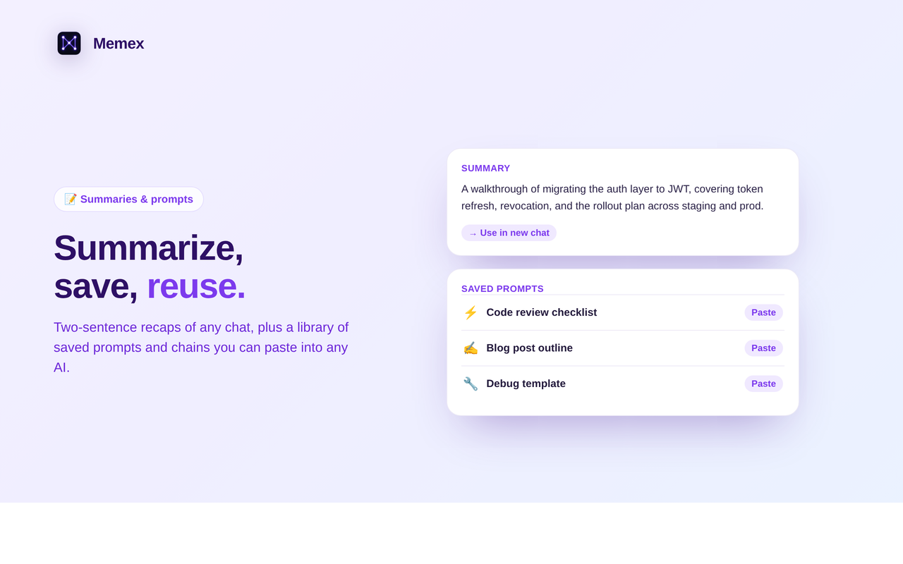
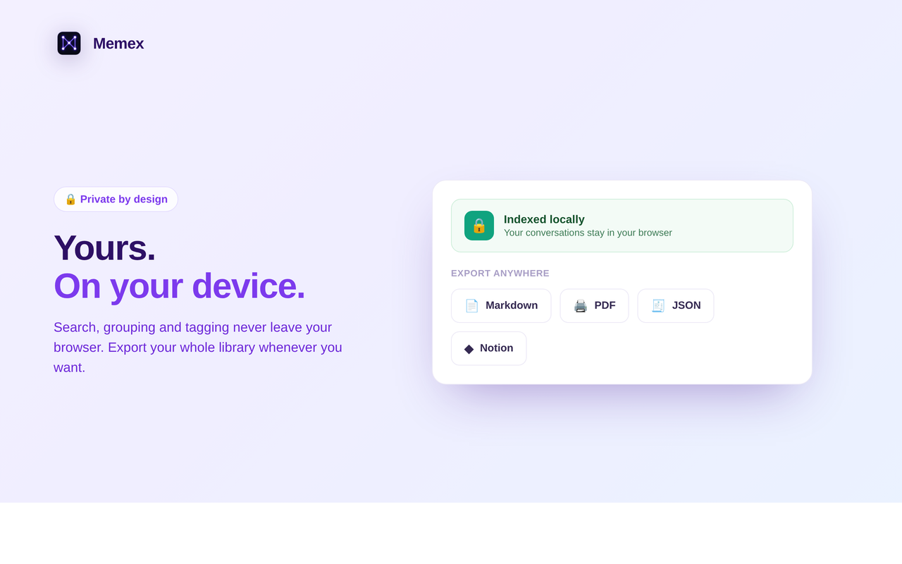

Memex
Your multi-AI memory — search, group and ask across ChatGPT, Claude, Perplexity and Gemini. A Manifest V3 browser extension backed by a Fastify + Supabase + Stripe service. Built solo, end to end, and shipped to the Chrome Web Store.
Overview
People now spread their thinking across several AI chats — ChatGPT, Claude, Perplexity, Gemini — and then can't find anything again. Memex is a browser extension that turns all of those conversations into one searchable, organizable memory that stays on your device. It's the only project here that isn't systems or compilers — it's a full product I designed, built and shipped on my own: the extension, the backend, auth, billing and the store listing.
What it does





How it works
- Per-provider content scripts. A small script runs only on each AI site (
claude.ai,chatgpt.com,perplexity.ai,gemini.google.com), reads the user's own open conversation, and feeds it to the index — one adapter per provider's DOM. - Local-first index. Conversations, tags and groups live in
browser.storage.local— search, grouping and tagging never leave the browser. Only minimal metadata is synced, for the user's own cross-device use. - A Manifest V3 service worker coordinates indexing, batched embedding for smart tags, and a tight content-security-policy that only ever talks to
api.getmemex.app. - AI features behind a metered backend. "Ask", auto-sort and summaries call a Fastify service with daily usage quotas enforced by Postgres RPCs — and you're never charged when a question has no relevant match.
The stack
- Extension — TypeScript, Vite build, Manifest V3 for Chrome & Firefox (via
web-ext),webextension-polyfill, a popup UI, and Vitest unit tests. - Backend — a Fastify (Node/TypeScript) API on Supabase (Postgres + Auth), with usage metering in SQL RPCs, deployed on Railway.
- Billing — Stripe subscriptions and trials; card data never touches the server.
- Integrations & ops — Notion export over OAuth, and Sentry for error monitoring.
Built solo, with rigor
Shipping a product that handles accounts, payments and user data meant taking security seriously: I ran a full security & correctness audit of the extension and backend — XSS vectors in the export generators, an unsigned OAuth state parameter, storage race conditions and quota-refund gaps — and worked through a pre-launch infrastructure checklist (schema, RPCs, RLS, key handling) before publishing.